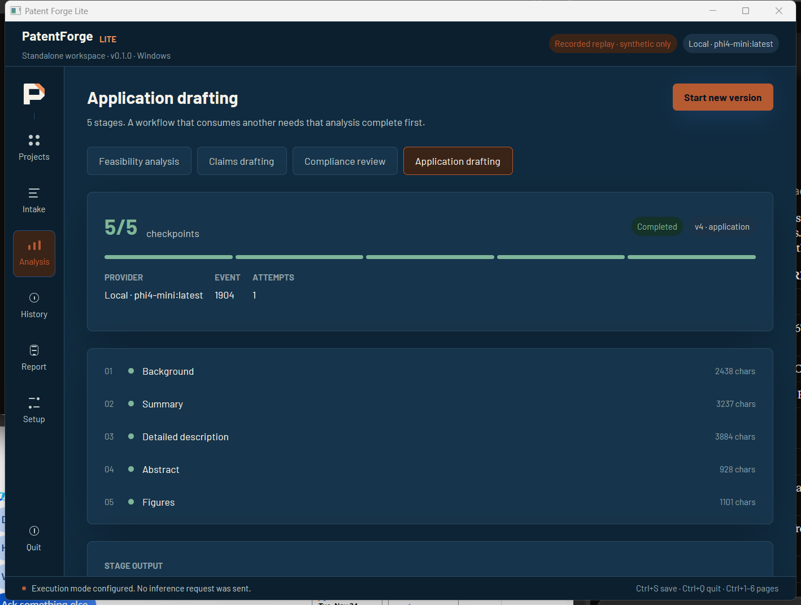
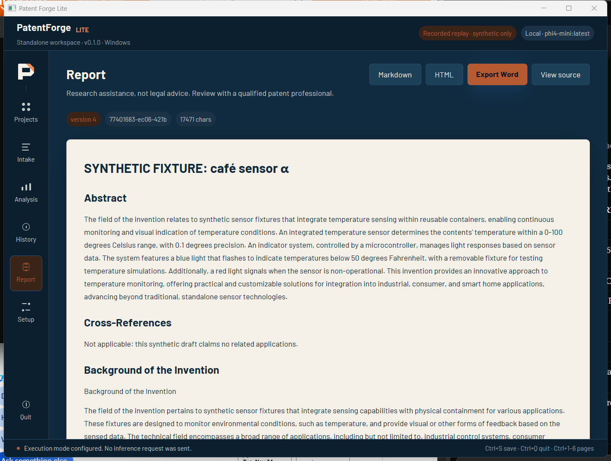

A standalone desktop application that takes an invention description through four real analyses — feasibility, claims, compliance and a full application draft — and hands you documents you can open, edit and file. No browser, no account, no legacy services.

Each one builds on the last, and each refuses to start until what it consumes is finished. Nothing is silently substituted.
Technical restatement, prior-art landscape, patentability under §102/§103/§112, deep dive, IP strategy and a consolidated report.
A claim strategy, up to twenty claims with broad, medium and narrow independents, an examiner critique, then a revision.
Written description, definiteness, formalities and eligibility findings against the claim set you just produced.
Abstract, background, summary, detailed description and drawings, assembled with your claims and an information-disclosure statement.
Reports open as a laid-out page — heading hierarchy, emphasis, real tables — and export to Word, HTML or Markdown from the same saved run.

Three steps, and you can stop at any of them.
Title, technical field, and at least fifty words of description, plus nine optional context fields that every stage reads.
Recorded replay (instant, offline, free) or your own Ollama model on this machine. Configuration alone never sends anything. Cloud is implemented in the engine but not yet selectable in the application.
Watch stages complete, cancel or resume across restarts, then read and export the saved version. Every run is immutable.
One engine behind the desktop, the command-line harness and the HTTP API. The same workflows, the same storage, the same exports.
Transactional SQLite. Every checkpoint, its token usage and its event commit together, so a crash resumes rather than re-runs.
No silent fallback, no background calls, no model downloads. Cloud requires per-run paid consent; local requires an on-machine endpoint.
A real accessibility tree — labelled controls and announced run status — plus Ctrl+1–6 page navigation and visible focus everywhere.
Per-user, no administrator rights, and uninstalling never deletes your projects.
Download the .exe, run it, launch from the Start menu.
patent-forge-lite-0.1.0-x64.exe
Unzip, then right-click → Open the first time. Requires macOS 13+.
unzip patent-forge-lite-0.1.0-macos-arm64.zip open "Patent Forge Lite.app"
Extract and run. Needs a working GPU and the usual desktop libraries.
tar xzf patent-forge-lite-0.1.0-linux-x64.tar.gz ./patent-forge-lite-v0.1.0-linux-x64/pfl-desktop
Analysis needs an inference runtime unless you use replay. Local mode expects an already-installed Ollama and a model you have pulled.
v0.1.0 is the published release. The repository also carries a 0.2.0 candidate whose installer is unsigned; its hash is in the release manifest. This page separates what has been proven from what has not.
| Area | State |
|---|---|
| Core engine, four analyses, storage, exports, CLI, API | Implemented and tested |
| Windows desktop | Built, launched, driven by hand and by automation |
| Windows installer | Built, signed, installed, uninstalled, verified |
| macOS & Linux desktop | Compiles and passes tests in CI; no interactive acceptance yet |
| macOS & Linux packages | Published unsigned; no installed or interactive acceptance yet |
| Local inference | Verified against Ollama on one model |
| Cloud inference | Selectable in the desktop with a session-only key and per-run paid approval; verified against a loopback stand-in, not a live endpoint |
| Live prior-art research | USPTO PatentsView with a session-only key and per-run opt-in; no live query verified yet |